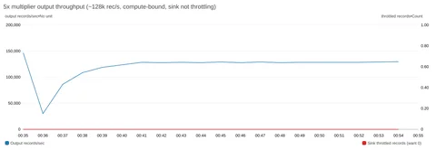

Multiply pre-recorded streams with Amazon Managed Service for Apache Flink
有效阅读仅保存在当前浏览器，用于「为你」推荐；暂停或清除记录。
来源摘要
Validating a streaming pipeline beyond current peak takes production-scale test data, and you can get it by multiplying pre-recorded streams with Amazon Managed Service for Apache Flink. You typically observe backpressure, growing checkpoint durations, and shard hot-spotting when you test under sust
本文目录 20 节
- Understanding streaming workloads and the need for at-scale testing
- Challenges with existing approaches to at-scale testing of streaming applications
- Solution overview
- Prerequisites to deploy the stream multiplier
- Deploy the solution
- Two ways to produce the stream
- How it works
- The multiplication operator
- Field generation with DataFaker
- A repeatable, deterministic generator
- What this looks like in practice
- Throughput and capacity
- Stability and resource utilization
- Your sink decides your throughput, not the multiplier
- Validating a run
- Troubleshooting
- Performance considerations and limitations
- Cost considerations
- Clean up
- Conclusion
原文
Validating a streaming pipeline beyond current peak takes production-scale test data, and you can get it by multiplying pre-recorded streams with Amazon Managed Service for Apache Flink. You typically observe backpressure, growing checkpoint durations, and shard hot-spotting when you test under sustained load. Reproducing them in a pre-production environment takes a data source that matches both the volume and the statistical characteristics of production traffic. Customer compliance teams often decide against replaying real production data directly because they want to avoid exposing sensitive fields. Existing approaches to generating that test load each solve for part of this problem while leaving a gap. As a result, teams either test at a fraction of expected load and discover the limits in production, or maintain a bespoke generator whose output gradually drifts from real production distributions.
With the stream multiplier pattern, a relatively small sample from Amazon Kinesis Data Streams is enough. With appropriate configuration, the pattern can help preserve the statistical properties of real traffic. You control output volume through a single parameter, multiple.factor.
This post covers why at-scale testing is difficult, where existing approaches fall short, how the multiplier works, and how it performs.
Understanding streaming workloads and the need for at-scale testing
Streaming applications process high-throughput data continuously. In production, they ingest several thousands to millions of events per minute and maintain stateful computations across operators. They write results to downstream sinks without interruption.
You typically see their critical failure modes under sustained, high-volume load. Checkpoint stalls, growing checkpoint durations, state backend pressure, application restarts, and state loss are problems that compound over time and under volume. Persistent high utilization of streaming resources does the same. A pipeline that runs cleanly at a fraction of its target throughput provides no evidence that it will behave the same way at full production rate.
The remaining question is where the test data comes from.
Challenges with existing approaches to at-scale testing of streaming applications
One approach to testing at production scale is to replay a full-volume pre-recorded stream. You capture live traffic from a production Kinesis data stream into a non-production stream over a defined window. You then replay it through your pipeline under test at the original rate. The data and field distributions are real, so you can compare the results with production behavior. However, at 50,000 records per second, a two-hour recording window holds 360 million records (50,000 × 7,200 seconds). You would need to capture and retain a recording at every throughput tier you validate. That becomes an operational and cost burden as the target volume grows.
Synthetic data generators take the opposite approach. Tools such as DataFaker or custom Kinesis producers remove the dependency on pre-recorded data. They emit records at any target rate from a schema definition, bounded only by the producer’s compute capacity. The limitation lies in data fidelity: generated records follow configured distributions, not observed ones.
Generators can model individual field distributions and known correlations. They can’t reproduce the natural skew, micro-bursts, and cross-field dependencies of real user behavior.
For pipelines whose correctness depends on realistic data, that gap can mask the exact problems the test is designed to expose.
A third option is to validate directly against live production traffic using canary deployments, shadow pipelines, or percentage-based traffic splitting. The data is real because it is production data, but you are limited to current production throughput. Testing at 5x or 10x that rate means waiting for organic traffic growth or building a separate load injection path into production.
Each of these approaches solves for either fidelity or volume, but not both at the target scale. The stream multiplier pattern addresses that gap.
Solution overview
Consider a ride-hailing company, AnyCompany Rides, that runs a real-time analytics pipeline on Apache Flink. The pipeline ingests trip events from a Kinesis data stream, computes fare estimates, driver matching scores, and surge pricing signals, and writes the results to a downstream Kinesis data stream. It processes approximately 15,000 events per second at peak. The team expects a regional expansion to increase peak traffic by 5x. Before launch, it needs to validate that the pipeline sustains 75,000 events per second without checkpoint degradation or backpressure.
The team has a ten-hour, sanitized recording of production traffic captured at 15,000 events per second. Replaying it at the original rate only validates current load. The team can’t capture a recording at 75,000 events per second because that traffic doesn’t exist yet. A synthetic generator that reproduces the trip types, fare ranges, and geographic patterns of the original stream would take significant modeling effort, with no guarantee of accuracy.
Using the stream multiplier pattern, the team sets a multiplication factor of 5x on the existing recording. For each event, the multiplier emits the original unchanged plus four synthetic variants. Each variant replaces the fields you configure with DataFaker values and preserves business keys such as trip ID. The output stream delivers approximately 75,000 events per second, and fields you don’t configure for replacement keep the distributions of the original recording.
The following diagram illustrates this architecture.

Figure 1: Stream multiplier solution architecture
The solution uses three AWS services and one open source library:
- Amazon Kinesis Data Streams holds the pre-recorded data stream on the source side, and carries the amplified stream to the pipeline under test on the sink side.
- Amazon Managed Service for Apache Flink runs the multiplier, a
RichFlatMapFunctionthat emits the original record plus N−1 variants. - Amazon CloudWatch collects the metrics that tell you whether the generator itself is healthy: throughput, backpressure, checkpoint duration, and heap.
- DataFaker, an open source Java library for generating realistic synthetic values, produces the replacement values for mutated fields, driven by expressions you declare in
faker-config.yamlrather than in code. It is declared as a build dependency and packaged into the application JAR, so there’s nothing to install separately. - The pattern is schema-agnostic: it operates on whichever fields you nominate as keys and whichever you nominate as mutable. In this sample, changing those fields is a configuration change. Adopting a different schema also requires updating the event model and the JSON serializers.
Prerequisites to deploy the stream multiplier
- An AWS account with permissions to create Managed Service for Apache Flink applications, Kinesis data streams, Amazon Simple Storage Service (Amazon S3) buckets, and Amazon CloudWatch log groups.
- A local build environment with Java Development Kit (JDK) 17 and sbt 1.9.9.
- A source Kinesis data stream holding the pre-recorded data, and a sink stream sized for source throughput × multiplication factor.
- An S3 bucket for the packaged application JAR.
- AWS Command Line Interface (AWS CLI) version 2, configured.
- An AWS Identity and Access Management (IAM) execution role with read access to the source stream and write access to the sink stream.
We tested the sample against these versions. The build.sbt file declares everything except the build tools, and sbt assembly bundles it into the JAR.
- JDK : 17.
- sbt : 1.9.9.
- Scala : 2.12.20.
- Apache Flink : 2.3.0.
- Amazon Managed Service for Apache Flink runtime environment : FLINK-2_3.
- aws-kinesisanalytics-runtime: 1.2.0.
- Apache Flink Amazon Kinesis Streams connector : 6.0.1-2.0.
- DataFaker : 2.7.0.
- Jackson : 2.15.2.
- Log4j : 2.24.3.
The Kinesis connector version is paired to the Flink version (6.0.1-2.0 targets Flink 2.x), and Flink 2.x requires Java 17 and uses the Java DataStream APIs, because the Scala DataStream APIs are no longer available.
A note on source data: This pattern doesn’t perform data masking, anonymization, or removal of personally identifiable information (PII). Fields that you don’t list in updatable.fields pass through unchanged. You are responsible for using only open data, or data that you sanitized, as the pre-recorded data stream. The walkthrough uses the public NYC taxi trip schema, which has the same shape as the AnyCompany Rides trip events. Deploy the solution
The sample-datastream-multiplier repository includes an AWS CloudFormation template that creates the Kinesis data streams, the Managed Service for Apache Flink application, the IAM role, and the CloudWatch log group. It also creates an AWS Key Management Service (AWS KMS) key for log encryption and an AWS Lambda function that seeds the source stream with sample records.
- Build the uber-JAR with
sbt assemblyand upload it to your S3 bucket. - Deploy
infrastructure/cfn-template.yamlas a stack nameddata-stream-multiplierwithaws cloudformation deploy, passingS3BucketArnandS3Key, and setMultipleFactor,KeyFields, andUpdatableFieldsas stack parameters. - Start the application with
aws kinesisanalyticsv2 start-application. - Begin at a factor of 2x or 3x, confirm the output is correct, then raise the factor while monitoring CPU and backpressure.
The template encrypts both Kinesis data streams at rest with the AWS managed key (alias/aws/kinesis), and the CloudWatch log group with a customer managed AWS KMS key. To use your own key, pass EncryptionKmsKeyArn. If you reuse an existing source stream (CreateInputStream=false), you’re responsible for confirming that it has server-side encryption enabled. Amazon S3 encrypts the application JAR with SSE-S3 by default, and the AWS SDK uses TLS in transit.
Two ways to produce the stream
The multiplier reads from one of two sources, which you select with the source.type runtime property, and both feed the same multiplication operator. Amplification mode (source.type=kinesis) is the focus of this post. It replays a pre-recorded data stream, so fields you don’t replace keep the distributions of real traffic. Throughput is the source rate multiplied by multiple.factor. Pure synthetic mode (source.type=datagen) uses the Apache Flink DataGen connector to generate records in the application from faker-config.yaml, with no real data involved. It is useful for validating the pipeline end to end before you have a pre-recorded stream.
How it works
In amplification mode, the multiplier processes each incoming event in five steps:
- Read and deserialize the event from the source Kinesis data stream.
- Emit the original event unchanged.
- Compute a deterministic hash from the configured key fields combined with a per-iteration random seed.
- Generate synthetic values for the fields listed in
updatable.fields, using that hash as the DataFaker seed and the expressions infaker-config.yaml. The key fields stay unchanged, so variants keep the same keys as the original. - Serialize and write all records, original plus variants, to the sink stream.
Managed Service for Apache Flink application runtime properties drive the behavior, so the same artifact serves both modes regardless of schema:
| Property | Purpose |
source.type | kinesis for amplification mode, datagen for pure synthetic mode |
multiple.factor | Total records emitted per input record: 1 original plus N−1 variants |
key.fields | Business identifiers preserved across variants, and hashed to seed generation |
updatable.fields | Fields replaced with synthetic values in each variant |
random.seeds | One seed per multiplication iteration, so variants differ from each other |
rate.limit.per.second | Caps generated throughput in pure synthetic mode |
The multiplication operator
The fan-out itself is deliberately small. A trait defines the contract, and flatMap is designed to emit the original followed by N−1 variants:
override def flatMap(value: IN, out: Collector[OUT]): Unit = {
if (isValidEvent(value)) {
emitOriginalEvent(value, out)
for (i <- 1 until multiplier) {
emitMultipliedEvent(value, out, i)
}
}
}A multiplication factor of 3 produces three records: the original and two variants. The application validates the factor at startup and rejects values outside a range of 1 to 100. A mistyped factor can generate enough output to exhaust the sink’s shard capacity or the application’s heap. Bounding it in code helps prevent a configuration error from overwhelming the test environment.
Field generation with DataFaker
You define which fields become synthetic, and how, outside the code. Each entry pairs a DataFaker expression with a type:
trip_generation:
from_location_name:
expression: "#{options.option 'Manhattan - Times Square','Brooklyn - Williamsburg','JFK Airport','Harlem'}"
expressionType: "string"
distance:
expression: "#{number.randomDouble '2','0','20'}"
expressionType: "float"
amount:
expression: "#{number.randomDouble '2','5','150'}"
expressionType: "float"With key.fields=tripId and five updatable.fields, one input trip fans out into variants that share its identity but differ in the nominated fields. Three of the ten variants of a single trip, read back off the amplified stream during a 10x run:
{"tripId":8801,"timestamp":1789627092733,"fromLocationName":"Brooklyn - Williamsburg","toLocationName":"Manhattan - Central Park","distance":18.9,"amount":22.75,"category":"1"}
{"tripId":8801,"timestamp":1789627092733,"fromLocationName":"Bronx - Yankee Stadium","toLocationName":"Upper West Side","distance":0.1,"amount":69.85,"category":"2"}
{"tripId":8801,"timestamp":1789627092733,"fromLocationName":"Tribeca","toLocationName":"Tribeca","distance":4.29,"amount":128.88,"category":"3"}tripId is identical on every variant because it is a key field, and timestamp because it appears in neither list and passes through untouched. The five updatable.fields differ in each. A consumer that groups by tripId still sees a coherent entity, because the key travels with every variant regardless of which shard carries it.
Figure 2: Inside the multiplier: the key field and untouched fields are identical on every variant, while the nominated fields are regenerated from a per-variant seed
The choice of updatable.fields controls the trade-off between variant diversity and preservation of production distributions.
A repeatable, deterministic generator
If the generator produces different data on every run, a change in throughput or checkpoint duration between runs tells you nothing. The multiplier is therefore designed to be deterministic: the same pre-recorded data stream and the same configuration generate the same variant values on every run. After a failure and restore, replayed records regenerate the values they had before. The at-least-once Kinesis sink can still write some of them twice. Each variant’s values come from a seed built from the record’s key fields and a per-iteration seed from random.seeds, so variants are reproducible but still differ from one another. Because the generator is reseeded for every record, the values don’t depend on replay order after a restore or on which subtask processes the record. That holds only while every generated value comes from the seeded generator. Values such as wall-clock time or UUID.randomUUID() would break it.
What this looks like in practice
This section shows how the multiplier performed in our tests: first its throughput ceiling and resource use across factors, then how the sink’s shard count changes what you measure.
We ran a factor sweep on Managed Service for Apache Flink in the US West (Oregon) AWS Region (us-west-2). We deliberately over-provisioned the sink so that the multiplier itself was the only limit. The application ran at parallelism 2 with automatic scaling off, on 3 Kinesis Processing Units (KPUs): 2 for processing and 1 for orchestration. Records used the NYC taxi trip schema, averaging about 181 bytes, with key.fields=tripId, five updatable.fields, and one seed per variant. To hold the input rate constant, we used the pure synthetic (datagen) source with rate.limit.per.second and scaled the sink to 240 shards. Per-variant field generation, the compute-intensive path, runs the same code in both modes. Your results will vary with record size, schema, and configuration.
Throughput and capacity
| Factor | Input rec/s | Output rec/s | Output per processing KPU |
| 5x | ~25,600 | ~128,000 | ~64,000 |
| 10x | ~14,300 | ~143,000 | ~71,500 |
| 15x | ~11,300 | ~169,000 | ~84,500 |
| 20x | ~8,600 | ~171,000 | ~85,500 |
| 25x | ~7,040 | ~176,000 | ~88,000 |
Stability and resource utilization
| Factor | CPU % avg/max | Backpressure | Checkpoint duration | Checkpoint size | Heap % avg/max |
| 5x | 99 / 100 | 0 | ~460 ms | ~17 KB | 31 / 63 |
| 10x | 96 / 100 | 0 | ~272 ms | ~73 KB | 34 / 65 |
| 15x | 99.6 / 100 | 0 | ~258 ms | ~46 KB | 35 / 59 |
| 20x | 99.7 / 100 | 0 | ~226 ms | ~57 KB | 38 / 66 |
| 25x | 99.7 / 100 | 0 | ~333 ms | ~57 KB | 36 / 63 |
Figure 3: Output ceiling rises toward an asymptote as the factor increases, while the input rate the application can consume falls
Output throughput rises with the factor. Between 5x and 25x in our sweep, output climbed from approximately 128,000 to approximately 176,000 records per second while the input rate the application consumed fell from approximately 25,600 to approximately 7,040. Each input record carries a fixed cost to read and deserialize, and each output record carries the per-variant field generation cost. Raising the factor amortizes the fixed cost over more outputs, so output flattens near approximately 176,000 records per second.
CPU is the binding constraint, not memory and not state. CPU sits at 96–100 percent in every row, so in this configuration these plateaus are the multiplier’s ceiling. Heap stays in a narrow 31–38 percent average band with no upward trend. The job turns on Flink object reuse and reseeds one DataFaker instance per subtask instead of creating one per record. Checkpoints stay tiny, 17–73 KB completing in 226–460 ms, because the stateless flatMap has nothing to snapshot beyond source offsets.
For capacity planning, size from output per processing KPU: roughly 64,000 records per second at 5x, rising to approximately 88,000 at high factors.
Per-factor CloudWatch views show output rate in blue and sink throttling in red. The flat red line at zero indicates each plateau is compute-bound rather than sink-limited:

Figure 4: At 5x, output plateaus at ~128,000 records per second with zero sink throttling
Figure 5: CPU pegged near 100% while heap stays comfortable. This is the signature of a compute-bound plateau
Your sink decides your throughput, not the multiplier
That ceiling is only reachable if the sink can absorb it. Holding the factor at 10x and changing nothing but the sink’s shard count shows where the real limit usually sits:
| Sink shards | Sink capacity rec/s | Observed output rec/s | Throttling | CPU % | Limited by |
| 20 | 20,000 | ~20,505 | heavy | ~16 | sink |
| 60 | 60,000 | ~62,000–70,000 | heavy | ~48 | sink |
| 120 | 120,000 | ~122,000–123,000 | mild | ~86 | sink (marginal) |
| 180 | 180,000 | ~143,000 | none | ~96 | compute (ceiling) |
At 20 shards the application ran at 14 percent of its capability with CPU at 16 percent, waiting on the sink. Only at 180 shards does throttling disappear and CPU saturate, so you are measuring the multiplier rather than your Kinesis provisioning.
A shard accepts 1,000 records or 1 MB per second on writes, whichever limit you reach first. For records under about 1 KB, like the approximately 181-byte trip events here, the record limit applies first. The sink needs roughly target output rate ÷ 1,000 shards before any factor comparison is meaningful. For larger records, size by bytes: one shard per MBps of target output. Under-provision it and every factor reports the same throughput: the shard limit.
The async KinesisStreamsSink re-queues and retries throttled records. Across our sweep, transient per-attempt failures stayed at 73 or fewer in a window against tens of millions of records, and we observed no permanent loss. Write latency held at approximately 40–54 ms average with occasional approximately 1.1 s spikes.
Shard load also stays even as the factor rises, because the partition key comes from the record’s hash rather than the multiplication factor. In our 25x run across 240 open shards, every shard carried between 671 and 678 records per second, within about 0.5 percent of the approximately 675 average.
Validating a run
Before you trust the load test, confirm that the multiplier is doing what you expect:
- Measure throughput on the Kinesis side, not the application side. Flink chains the source, the multiplier, and the sink into a single operator. As a result, the application-level
numRecordsInPerSecondandnumRecordsOutPerSeconddon’t cleanly separate input from output. UseGetRecords.Recordson the source stream andIncomingRecordson the sink stream. Their ratio is the true fan-out and should equal your multiplication factor. In our 10x amplification run, it measured 2,056 records per second in against 20,505 out, a ratio of 9.97. - Key preservation. Sample the sink stream and confirm that variants share key-field values and that fields outside both lists are unchanged.
Troubleshooting
If the amplified stream isn’t what you expect, check these first:
- All variants of a record are identical.
random.seedshas fewer entries than the multiplication factor requires. - Output rate is below factor × input rate. Check
WriteProvisionedThroughputExceededon the sink andbackPressuredTimeMsPerSecondon the operator, and provision at leasttarget output rate ÷ 1,000sink shards for records under about 1 KB. - The source falls behind. Watch
millisBehindLateston the application orGetRecords.IteratorAgeMillisecondson the source stream. If the lag climbs during a live run, add source shards or use Enhanced Fan-Out and watchSubscribeToShardEvent.MillisBehindLatestinstead. - The application crash-loops after switching
source.type. Switching modes changes the job graph, so restoring the previous snapshot fails with aKinesisShardSplitSerializer EOFException. Start the application withSKIP_RESTORE_FROM_SNAPSHOT. The multiplier is stateless, so there is no application state to restore. Property changes, includingsource.type, take effect only after an application update.
Performance considerations and limitations
The multiplier inherits the timing of the pre-recorded data rather than synthesizing it. Amplification multiplies volume and keeps the sample’s timing shape, so bursts in the pre-recorded data carry through at higher amplitude. Injecting bursts that are not in the sample, spreading variants over an interval rather than emitting them together, and simulating late arrival all need extra logic. The sample uses WatermarkStrategy.noWatermarks() because the multiplier has no event-time operators. Flink also doesn’t write watermarks into Kinesis records, so the watermark setting in the multiplier has no effect on the pipeline under test. Each variant keeps the original timestamp in its payload. The pipeline under test assigns its own watermarks from that field, as it does in production.
Generated fields are independent of each other. Each entry in faker-config.yaml is evaluated on its own, so in the trip example, distance is drawn from 0–20 and amount from 5–150 with no relationship between them. A 0.5-mile trip can be assigned a $150 fare. Ordering is preserved within a partition but not across partitions, so if the pipeline under test depends on global ordering, the amplified stream won’t provide it.
The sample assumes that the source and sink streams are in the same AWS account. For a stream in another account, grant the application’s execution role access with a resource-based policy on that stream. The sample also reads and writes JSON. Because the multiplier works on deserialized objects, supporting Apache Avro or Protocol Buffers means replacing JsonDeserializationSchema and JsonSerializationSchema. The multiplication logic is unchanged.
Cost considerations
You pay for Kinesis shard-hours, PUT payload units, and extended retention, and for Managed Service for Apache Flink KPU-hours and running application storage. Amazon CloudWatch Logs and AWS KMS add smaller charges. The following estimates are approximate and use on-demand prices in US West (Oregon) as of October 2026. Prices vary by AWS Region and change over time, so check Amazon Kinesis Data Streams pricing, Amazon Managed Service for Apache Flink pricing, or the AWS Pricing Calculator for your Region.
Default deployment. The template runs three shards with seven-day retention and 3 KPUs, two for processing and one for orchestration. That comes to about $0.45 per hour, or about $11 per day if you leave it running, plus PUT payload units for the records you write. Automatic scaling is on by default and can add KPUs under load.
The 25x run in this post. Two hours at 25x, with 240 sink shards and about 176,000 records per second, uses about 1.3 billion PUT payload units ($17.75), 480 sink shard-hours ($7.20), and 6 KPU-hours ($0.66), for about $26. Seven-day retention adds about $9.60, for about $35. Lower factors write fewer records and cost less.
To keep costs down, set StreamRetentionHours to 24 unless you plan to replay the amplified stream. Size the sink to your target output rate, keep test windows short, and follow the clean-up steps as soon as you finish.
Clean up
To avoid ongoing charges, stop the application, wait until it reports READY, then delete the stack:
aws kinesisanalyticsv2 stop-application --application-name DataStreamMultiplier --force
aws cloudformation delete-stack --stack-name data-stream-multiplierDeleting the stack removes the Kinesis data streams, the application, the IAM role, the producer Lambda function, and the log group. If the stack created the AWS KMS key, AWS CloudFormation schedules it for deletion after a 30-day waiting period. Delete the JAR from your S3 bucket separately.
Conclusion
Validating a streaming pipeline at production scale requires a data source that delivers both realistic data and sustained volume. With the stream multiplier pattern, real distributions come from the pre-recorded capture, and you control volume through a single parameter, multiple.factor, rather than through storage. To get started, clone the sample-datastream-multiplier repository and follow the steps in Deploy the solution, starting at a factor of 2x or 3x. For more on building and running applications on the service, see the Amazon Managed Service for Apache Flink Developer Guide.
这篇内容对你有用吗？
反馈只用于改善内容筛选，不等同于收藏